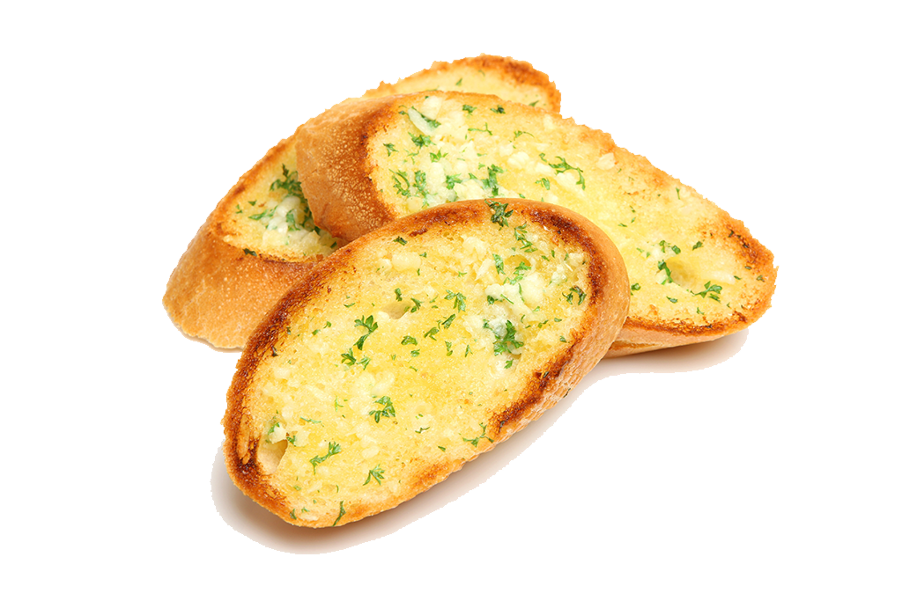

Garlic Bread Recipe

Ingredients:
1 loaf of Italian or French bread
1/2 cup unsalted butter, softened
3-4 cloves garlic, minced
2 tablespoons fresh parsley, chopped (or 1 tablespoon dried parsley)
1/4 teaspoon salt
1/4 cup grated Parmesan cheese (optional)
Instructions:
Prepare the Bread:
Preheat your oven to 375°F (190°C).
Slice the bread in half lengthwise.
Make the Garlic Butter:
In a small bowl, combine the softened butter, minced garlic, chopped parsley, and salt. Mix until well combined.
Assemble the Garlic Bread:
Spread the garlic butter mixture evenly over the cut sides of the bread.
If desired, sprinkle grated Parmesan cheese on top.
Bake:
Place the bread halves on a baking sheet, buttered side up.
Bake for about 10-15 minutes, or until the bread is golden and crispy around the edges.
Serve:
Let the garlic bread cool slightly before slicing and serving.